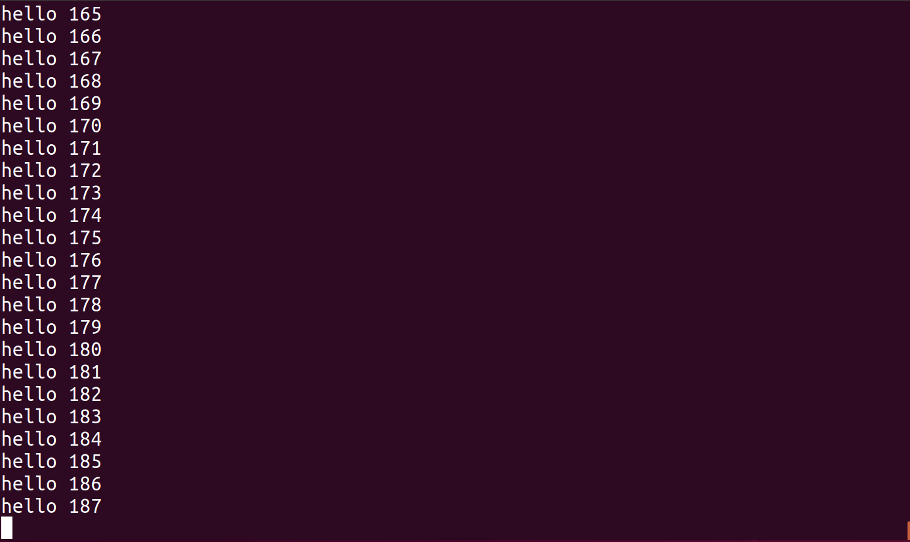
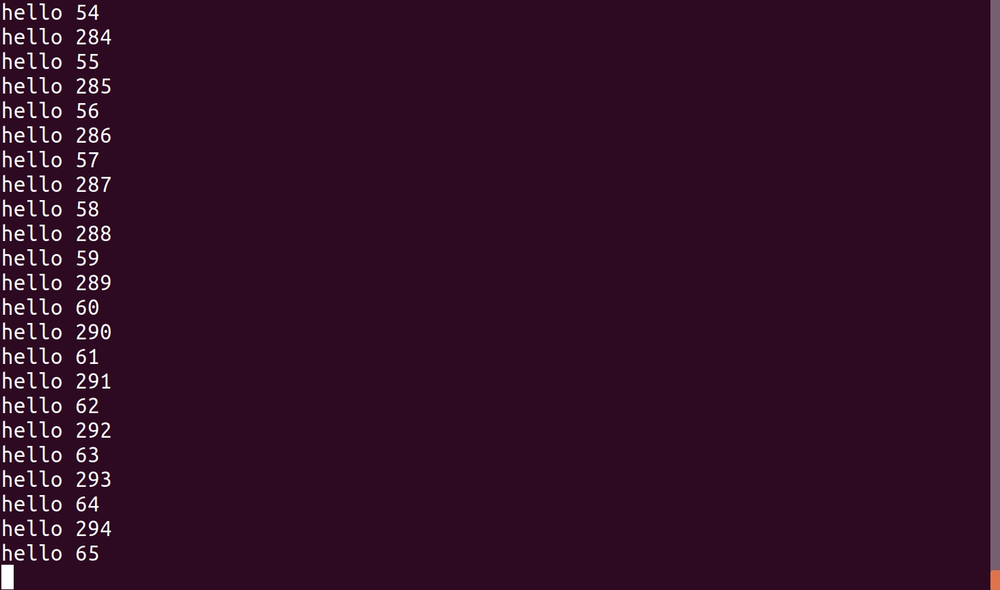

I am currently trying to make it possible to run concurrent "tasks" on the lispBM evaluator. This text is a description of the state, at this point in time, of that experiment. There are many changes to the code that goes into this, therefore the code goes on a separate branch called "concurrency" in the GitHub repo.
The "concurrent" branch contains a working example REPL, called repl-cps but the collection of tests have not been updated to run on the, let's call it, concurrent runtime system. So all tests will currently fail. The repl example runs on x86 32bit and uses pthreads to continuously run the evaluator in parallel with the reader part of the repl.
This experiment is about concurrency, not parallelism, so the idea is to time-share the evaluator between several contexts. To realize this the biggest changes are all in the eval_cps.c file which contain the evaluator.
Constructive feedback is as usual extremely appreciated. Thanks!
Let's start with an example that illustrate what is currently implemented. The program below runs forever and starts off with yielding for 500000 usec (0.5 seconds), then prints out a message and a counter value.
(let ((f (lambda (x)
(progn
(yield 500000)
(print "hello " x \#newline)
(f (+ x 1))))))
(f 0))
The lispBM program above is conceptually similar to the C program below.
while (true) {
usleep(500000);
printf("hello %d\n", x++);
}
The screenshots below show what is output to the screen with one or two instances of this example program running. In the Two instances case, the second instance was started when the first one had reached a count of about 229.
| One instance | Two instances |
|---|---|
|  |  |
The earlier text on the evaluator hints that there is a datatype called eval_context_t that holds most information about the currently running program. This eval_context_t datatype is extended a little bit here. Just as before, the context hold a program, a currently executing expression and a current environment as well as the continuation stack. Thus, each task has its own private continuation stack while the heap is shared between all tasks.
typedef struct eval_context_s{
VALUE program;
VALUE curr_exp;
VALUE curr_env;
VALUE r;
bool done;
bool app_cont;
stack K;
/* Process control */
uint32_t timestamp;
uint32_t sleep_us;
CID id;
/* List structure */
struct eval_context_s *prev;
struct eval_context_s *next;
} eval_context_t;
Now, eval_context_t also contains a block of Process control values. The timestamp and the sleep_us that are used to know when it is time to wake up a sleeping task. The id is an identification number for the task. The eval_context_t now also have a prev and next pointer to allow forming a doubly linked list. The list structure of contexts, will be used to implement a queue of tasks later.
Apart from these task/process management fields, the done and app_cont flags have moved into the context. This is because it is necessary to maintain this information on a per task basis now. Before, the RTS only ever dealt with one task at a time and those flags could be globals.
static eval_context_t *ctx_queue = NULL;
static eval_context_t *ctx_queue_last = NULL;
static eval_context_t *ctx_done = NULL;
static eval_context_t *ctx_running = NULL;
There is a ctx_queue that contains contexts that wait for their turn to be run. A pointer to the first element and last element of this queue is maintained so that new tasks can be easily added to the end of the queue. If no context is currently running, the ctx_queue is scanned from the front in a search for a context with a timestamp and sleep time that indicates it should be set as the running context. More details about this later.
The ctx_running pointer points to the currently executing context.
Contexts that terminate, either because of an error or because of running all the way through their programs, are moved to the ctx_done queue.
The example program above, that sleeps and prints hello, was run on x86 32-bit and made use of PThreads to decouple the "user interface" part of the REPL from the lispBM RTS. The evaluation function now runs continuously in its own thread. Now lispBM also needs to get access to functions for generating timestamps and for sleeping. All of this should happen in a way that is portable over (I hope) ChibiOS, ZephyrOS, FreeRTOS and X86 + PThreads. There are a number of callback functions that should be set for each specific implementation for, sleeping and timestamp generation.
There is also a callback function that optionally can be set called the ctx_done_callback. This function is executed each time a task completes. The example REPL uses this callback to present the result of a computation to the user.
static void (*usleep_callback)(uint32_t) = NULL;
static uint32_t (*timestamp_us_callback)(void) = NULL;
static void (*ctx_done_callback)(eval_context_t *) = NULL;
void eval_cps_set_usleep_callback(void (*fptr)(uint32_t)) {
usleep_callback = fptr;
}
void eval_cps_set_timestamp_us_callback(uint32_t (*fptr)(void)) {
timestamp_us_callback = fptr;
}
void eval_cps_set_ctx_done_callback(void (*fptr)(eval_context_t *)) {
ctx_done_callback = fptr;
}
The enqueueing and dequeueing functions, together, implement the scheduling strategy. The enqueue_ctx function places a context at the end of the ctx_queue queue and the dequeue_ctx function searches for a context to run from the front of the ctx_queue. This should mean that contexts that have been in the queue the longest have priority over recently enqueued ones.
The enqueue_ctx function just adds a context to the ctx_queue. So if the queue is empty, ctx_queue and ctx_queue_last will point to the newly added context. Otherwise, the new context is added after ctx_queue_last and ctx_queue_last is updated.
void enqueue_ctx(eval_context_t *ctx) {
if (ctx_queue_last == NULL) {
ctx->prev = NULL;
ctx->next = NULL;
ctx_queue = ctx;
ctx_queue_last = ctx;
} else {
ctx->prev = ctx_queue_last;
ctx->next = NULL;
ctx_queue_last->next = ctx;
ctx_queue_last = ctx;
}
}
The dequeue_ctx function, performs a search from the front of the ctx_queue and uses the timestamp and sleep_us fields of the context to see if there is a context that should be dequeued at this time. If there is no context to run at this time, either a default sleep period or the smallest sleep_us found when traversing the queue, whichever is smaller, is provided to the caller. This means that there is a maximum sleep period that is returned by the dequeue operation.
eval_context_t *dequeue_ctx(uint32_t *us) {
uint32_t min_us = DEFAULT_SLEEP_US;
uint32_t t_now;
if (timestamp_us_callback) {
t_now = timestamp_us_callback();
} else {
t_now = 0;
}
eval_context_t *curr = ctx_queue;
while (curr != NULL) {
uint32_t t_diff;
if ( curr->timestamp > t_now) {
/* There was an overflow on the counter */
t_diff = (0xFFFFFFFF - curr->timestamp) + t_now;
} else {
t_diff = t_now - curr->timestamp;
}
if (t_diff >= curr->sleep_us) {
eval_context_t *result = curr;
if (curr == ctx_queue_last) {
if (curr->prev) {
ctx_queue_last = curr->prev;
ctx_queue_last->next = NULL;
} else {
ctx_queue = NULL;
ctx_queue_last = NULL;
}
} else if (curr->prev == NULL) {
ctx_queue = curr->next;
if (ctx_queue) {
ctx_queue->prev = NULL;
}
} else {
curr->prev->next = curr->next;
if (curr->next) {
curr->next->prev = curr->prev;
}
}
return result;
}
if (min_us > t_diff) min_us = t_diff;
curr = curr->next;
}
*us = min_us;
return NULL;
}
A context can only reach completion when it is the currently running context, ctx_running. The finish_ctx function puts the ctx_running on the ctx_done list and calls the ctx_done_callback. The currently running context is set to NULL. This function is called from advance_ctx that is explained below.
void finish_ctx(void) {
if (ctx_done == NULL) {
ctx_running->prev = NULL;
ctx_running->next = NULL;
ctx_done = ctx_running;
} else {
ctx_running->prev = NULL;
ctx_running->next = ctx_done;
if (ctx_running->next) {
ctx_running->next->prev = ctx_running;
}
ctx_done = ctx_running;
}
if (ctx_done_callback) {
ctx_done_callback(ctx_done);
}
ctx_running = NULL;
}
The remove_done_ctx removes a context with id cid from the ctx_done list. The idea is that this should be used in the implementation of some kind of wait functionality later, the details of that needs to be worked out.
void remove_done_ctx(uint32_t cid) {
eval_context_t * curr = ctx_done;
while(curr) {
if (curr->id == cid) {
if (curr->prev) {
curr->prev->next = curr->next;
}
if (curr->next) {
curr->next->prev = curr->prev;
}
stack_free(&curr->K);
free(curr);
break;
}
curr = curr->next;
}
}
EDIT 2020-04-09
remove_done_ctx is flawed for the case when the context to remove is the first in the ctx_done list. I hope the following is a fix.
eval_context_t * curr = ctx_done->next;
if (ctx_done->id == cid) {
stack_free(&ctx_done->K);
free(ctx_done);
ctx_done = curr;
if (ctx_done) {
ctx_done->prev = NULL;
}
return true;
}
while(curr) {
if (curr->id == cid) {
if (curr->prev) {
curr->prev->next = curr->next;
}
if (curr->next) {
curr->next->prev = curr->prev;
}
stack_free(&curr->K);
free(curr);
return true;
}
curr = curr->next;
}
return false;
}
A new context is created and enqueued on the ctx_queue using the create_ctx function. This function takes a program, a stack size and a flag indicating if the stack should be reallocated when full, as arguments. Here, a context is allocated, a stack allocated, and then the context is enqueued. This function also assigned context ids, which are currently just increasing numbers with no recycling schema.
CID create_ctx(VALUE program, uint32_t stack_size, bool grow_stack) {
if (next_ctx_id == 0) return 0; // overflow of CIDs
if (type_of(program) != PTR_TYPE_CONS) return 0;
eval_context_t *ctx = NULL;
ctx = malloc(sizeof(eval_context_t));
ctx->program = cdr(program);
ctx->curr_exp = car(program);
ctx->curr_env = NIL;
ctx->done = false;
ctx->app_cont = false;
ctx->timestamp = 0;
ctx->sleep_us = 0;
ctx->id = next_ctx_id++;
if (!stack_allocate(&ctx->K, stack_size, grow_stack)) {
free(ctx);
return 0;
}
if (!push_u32(&ctx->K, enc_u(DONE))) {
free(ctx);
stack_free(&ctx->K);
return 0;
}
enqueue_ctx(ctx);
return ctx->id;
}
Lastly a small helper function that is called from the REPL to easily add a new context to the queue.
CID eval_cps_program(VALUE lisp) {
return create_ctx(lisp, 256, false);
}
Earlier,eval_cps.c contained a static function (local to that file) called run_eval. Now evaluation should run continuously in a separate thread, but how to create that thread differs depending on platform. Therefore the new variant of run_eval, called eval_cps_run_eval is an extern function that should be wrapped in a thread.
The new eval_cps_run_eval function contains an infinite loop, while (eval_running), that in each iteration checks if there is a currently running context. If there is no currently running context, it attempts to dequeue one. Dequeueing either provides a context or a sleep period that can be used to go to sleep for a while before trying to dequeue again.
When a context is running, the eval_cps_run_eval function behaves the same way as the the old run_eval did.
void eval_cps_run_eval(void){
bool perform_gc = false;
uint32_t non_gc = 0;
while (eval_running) {
if (!ctx_running) {
uint32_t us;
ctx_running = dequeue_ctx(&us);
if (!ctx_running) {
if (usleep_callback) {
usleep_callback(us);
}
continue;
}
}
...
Yielding is the only way that a context (that is not done executing) can be removed from being the currently running context. That is, there is no preemption currently. There is a symbol yield that can be used like a function application in a lispBM program. It takes one argument which is a sleep time. When yield is evaluated the function yield_ctx is executed.
yield_ctx updates the timestamp and sleep time of the context and adds it to the queue. The intermediate result maintained in the context is set to t for true as this is the value of yield.
The last thing yield_ctx does is set the ctx_running to NULL which means that the next iteration of the evaluator can try to schedule another context or go to sleep for a while.
void yield_ctx(uint32_t sleep_us) {
if (timestamp_us_callback) {
ctx_running->timestamp = timestamp_us_callback();
ctx_running->sleep_us = sleep_us;
} else {
ctx_running->timestamp = 0;
ctx_running->sleep_us = 0;
}
ctx_running->r = enc_sym(symrepr_true());
ctx_running->app_cont = true;
enqueue_ctx(ctx_running);
ctx_running = NULL;
}
Handling of the yield application is very similar to how fundamental operations are applied. In the apply_continuation function and the APPLICATION case, there is a check to see if what is being applied is the yield function. in that case the yield_ctx function is applied.
...
if (dec_sym(fun) == symrepr_yield()) {
if (type_of(fun_args[1]) == VAL_TYPE_I) {
INT ts = dec_i(fun_args[1]);
stack_drop(&ctx->K, dec_u(count)+1);
yield_ctx(ts);
} else {
error_ctx(ctx, enc_sym(symrepr_eerror()));
}
return;
}
...
A program is a list of expressions to be evaluated one after the other. The context keeps track of which expression is the currently executing one and also what expressions are left to evaluate within the program. When evaluation of one expression within a program is done, the next expression should be set as the current one. This operation is performed by the advance_ctx function.
If there are no further expressions to evaluate as part of the program, the finish_ctx function is run and the context is moved to the done list.
void advance_ctx() {
if (type_of(ctx_running->program) == PTR_TYPE_CONS) {
push_u32(&ctx_running->K, enc_u(DONE));
ctx_running->curr_exp = car(ctx_running->program);
ctx_running->program = cdr(ctx_running->program);
ctx_running->r = NIL;
ctx_running->app_cont = false;
} else {
ctx_running->done = true;
finish_ctx();
}
}
The evaluator knows that it is done with an expression when a DONE continuation is encountered on the continuation stack. In this case the advance_ctx function is called.
void apply_continuation(eval_context_t *ctx, bool *perform_gc){
VALUE k;
pop_u32(&ctx->K, &k);
VALUE arg = ctx->r;
ctx->app_cont = false;
switch(dec_u(k)) {
case DONE:
advance_ctx(ctx);
return;
...
A small change is needed in how garbage collection is performed. Now that there are multiple contexts in flight, it is important to remember that all of them need to be considered when marking.
The gc function below loops over all contexts that are runnable (the ctx_queue) and performs a marking phase on each of their environments, expressions, programs and so on. The currently running context is treated the same way.
The contexts that are on the done list do not need to be kept on the heap. Only the result they computed can be needed in the future. Therefore only the result of contexts on the done list are given a marking run.
int gc(VALUE env,
eval_context_t *runnable,
eval_context_t *done,
eval_context_t *running) {
gc_state_inc();
gc_mark_freelist();
gc_mark_phase(env);
eval_context_t *curr = runnable;
while (curr) {
gc_mark_phase(curr->curr_env);
gc_mark_phase(curr->curr_exp);
gc_mark_phase(curr->program);
gc_mark_phase(curr->r);
gc_mark_aux(curr->K.data, curr->K.sp);
curr = curr->next;
}
curr = done;
while (curr) {
gc_mark_phase(curr->r);
curr = curr->next;
}
gc_mark_phase(running->curr_env);
gc_mark_phase(running->curr_exp);
gc_mark_phase(running->program);
gc_mark_phase(running->r);
gc_mark_aux(running->K.data, running->K.sp);
#ifdef VISUALIZE_HEAP
heap_vis_gen_image();
#endif
return gc_sweep_phase();
}
The REPL example makes use of PThreads and runs the eval_cps_run_eval function in a separate thread. A small wrapper is needed around that function to make it compatible with the type that PThreads assumes for a thread function.
void *eval_thd_wrapper(void *v) {
eval_cps_run_eval();
return NULL;
}
The callbacks that are used in the REPL implementation are shown below. The done_callback outputs some information every time a context ends up on the done list.
void done_callback(eval_context_t *ctx) {
char output[1024];
char error[1024];
CID cid = ctx->id;
VALUE t = ctx->r;
int print_ret = print_value(output, 1024, error, 1024, t);
if (print_ret >= 0) {
printf("<< Context %d finished with value %s >>\n# ", cid, output);
} else {
printf("<< Context %d finished with value %s >>\n# ", cid, error);
}
fflush(stdout);
}
The timestamp_callback uses gettimeofday to generate a timestamp in number of microseconds.
uint32_t timestamp_callback() {
struct timeval tv;
gettimeofday(&tv,NULL);
return (uint32_t)(tv.tv_sec * 1000000 + tv.tv_usec);
}
The sleep_callback uses nanosleep to put the calling thread to sleep for a while.
void sleep_callback(uint32_t us) {
struct timespec s;
struct timespec r;
s.tv_sec = 0;
s.tv_nsec = (long)us * 1000;
nanosleep(&s, &r);
}
Then the callbacks are registered with the evaluator.
eval_cps_set_ctx_done_callback(done_callback);
eval_cps_set_timestamp_us_callback(timestamp_callback);
eval_cps_set_usleep_callback(sleep_callback);
And just for completeness, how to start the PThread is shown below.
/* Start evaluator thread */
if (pthread_create(&lispbm_thd, NULL, eval_thd_wrapper, NULL)) {
printf("Error creating evaluation thread\n");
return 1;
}
For a more complete picture of how the REPL is put together see the code.
More testing! The heaviest load I've started is 8 instances of the example program that sleeps and prints hello. More and more diverse test programs are needed.
Add wait functionality. Calling (wait cid) should cause the task that called wait to stop until the task with context-id cid finishes. The result of (wait cid) should be the result computed by the task with context-id cid. Finished contexts are stored on a list called ctx_done, so one way to implement wait is wake up a waiting task periodically and perform a search over the ctx_done list. If the cid is not present in the list then the waiting task can go back to sleep for a while.
Some way to create tasks "programmatically". Currently a new task is created for each expression entered using the repl. I don't have any idea of how the details of this will work out, but imagine that there should be some kind of spawn or fork function.
Some way to communicate values between running tasks would be nice. Maybe a queue structure that those tasks who want to communicate both know about. All tasks run in the same heap, so it is just a matter of making both tasks aware of the existence of the queue.
Testing on top of ChibiOS, ZephyrOS and FreeRTOS.
There are no priorities, preemptions or periodic task switches. So a task that is running forever and does not yield can starve everything else out. This is definitely not suitable for anything timing critical.
Be opportunistic and run the GC in case there is currently no runnable context.
The gc function should perform error checking! Each call to gc_mark_phase can fail and if one does, there RTS should be reset. There is no need to try to continue executing after such a failure as the heap will most likely be corrupt.
What about events from the outside, such as a button press or data arriving over some communication channel? These things are sometimes handled using an interrupt. Some way of dealing with these "external" events are needed. There may be more suitable abstractions for these kinds of interruptions to apply to this system. Streams/queues of events? where the underlying enqueueing of events is performed by the RTS.
Thank you for reading. If you have insights I seem to have missed, please let me know! I would be very grateful.
© Copyright 2020 Bo Joel Svensson
This page was generated using Pandoc.